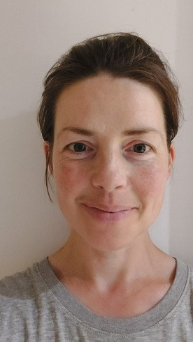

Evidence, not noise
以可验证的经验与结果建立信任
数据只作为判断依据的一部分。Rain Education 更重视学生背景、路径适配、执行节奏和家庭决策质量。
Rain Education Pathway
把香港升学路径做成一套可管理的长期规划
香港教育体系并非单一申请节点，而是由课程选择、GPA 管理、专业定位、背景积累和申请窗口共同组成的路径系统。
建立本科衔接目标，管理 GPA、课程组合与转学节奏。
明确专业方向、院校梯度与学术表现证明。
整合本科背景、实习研究、文书与推荐信策略。
围绕研究兴趣、导师匹配、研究计划与长期发展定位。
Core Programmes
围绕学生真实路径，而不是围绕单次申请
每个项目都从背景诊断开始，结合院校要求、时间窗口、学术风险与家庭目标，形成可执行的升学管理方案。
港八副学士 2+2+1 名校跃升计划
适合希望通过副学士路径进入港八本科，并继续衔接硕士发展的学生。
港九大本硕连读精英保送计划
围绕香港本科与硕士衔接进行课程、GPA、背景和申请节奏规划。
香港本科申请
覆盖本地课程、国际课程、高考生及转学背景的香港本科定位与材料管理。
香港硕士申请
结合专业匹配、申请轮次、文书结构和面试准备，提升申请确定性。
英国 G5 申请
面向高竞争专业，建立学术叙事、个人陈述、笔面试与院校梯度方案。
新加坡申请
聚焦 NUS、NTU 等亚洲顶尖院校，管理专业选择、材料表达与时间节点。
GPA 管理与背景提升
从课程选择、学习节奏、科研实习到推荐信素材，提前构建申请证据链。
Case Studies
不做 Offer 墙，呈现每个结果背后的规划逻辑
案例展示采用匿名化方式，重点说明学生起点、关键挑战、规划路径和 Rain Education 的具体支持。
副学士学生进入香港本科学位课程
- 学生背景
- 香港副学士在读，目标为商科相关本科衔接。
- 挑战
- GPA 需要稳定提升，专业选择与申请梯度需要重新排序。
- 规划路径
- 课程表现管理、文书叙事、材料节点和院校沟通同步推进。
- 最终结果
- 获得香港本地大学本科阶段录取机会。
- 关键支持
- GPA 管理、转学路径判断、材料结构和 offer 跟进。
跨专业学生获得港校硕士录取
- 学生背景
- 本科背景与目标专业存在一定跨度。
- 挑战
- 需要证明学术动机、先修能力和职业路径一致性。
- 规划路径
- 重组课程、项目、实习与文书主线，形成可信申请逻辑。
- 最终结果
- 进入香港高校硕士项目录取范围。
- 关键支持
- 专业定位、申请轮次、文书策略和面试准备。
本科申请延伸至英国、新加坡与北美方向
- 学生背景
- 国际课程学生，希望同时评估多个国家和院校体系。
- 挑战
- 不同地区录取逻辑、材料重点和时间窗口差异明显。
- 规划路径
- 建立主申方向与备选路径，统一学术叙事与背景证据。
- 最终结果
- 形成多地区、多层级院校申请组合。
- 关键支持
- 全球院校梯度、专业匹配、材料版本管理和家庭决策支持。
Academic Advisory Team
导师团队承担的是学术判断，而不只是材料修改
导师体系覆盖香港副学士衔接、GPA 管理、商科、人文、理工、艺术作品集、英国 G5 与全球研究生申请方向。
Dr. Olivia Zhang
Yale / UCL
高等教育战略、学生发展、全球升学路径Sophia Chen
UCLA Higher Education
副学士衔接、GPA 修复、香港本科路径
Bodan Ding
HKU / Imperial / Oxford
数学、理工学术规划、研究生申请
Alison Ballance
Goldsmiths / Chelsea College of Art
艺术作品集、个人陈述、英国艺术院校Why Rain Education
真正的升学规划，是把每个关键变量提前管理
香港本地资源
熟悉香港院校体系、申请窗口、课程衔接和本地家庭决策节奏。
长期 GPA 管理
从课程选择、学习节奏、阶段目标到风险预警，减少后期补救成本。
导师体系
按学科、申请阶段和学生短板匹配导师，形成持续支持。
家庭陪跑
帮助家长理解路径、节点与风险，减少信息不对称带来的焦虑。
学术规划
将成绩、专业、研究兴趣、实习和文书统一成可信学术叙事。
全球升学路径
香港为起点，兼顾英国、新加坡、北美、澳洲等多地区选择。
Private Consultation
预约一次升学评估，先把路径判断清楚
适合正在考虑香港副学士、本科、硕士、英国 G5、新加坡或全球名校方向的家庭。我们会先评估学生背景、时间窗口和可执行路径。